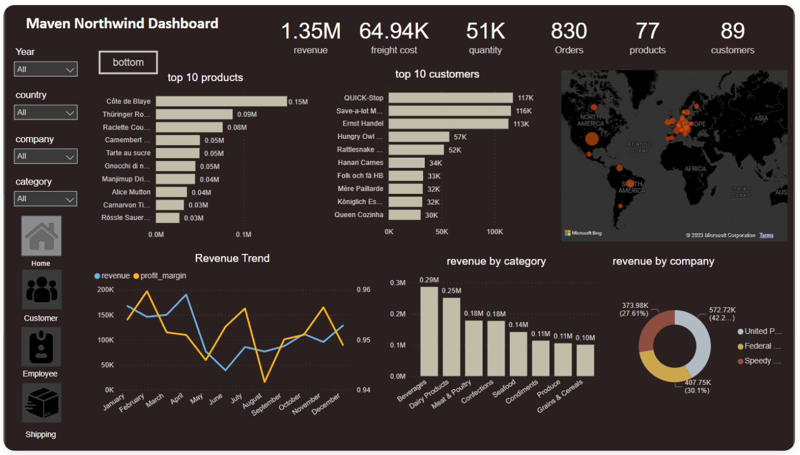
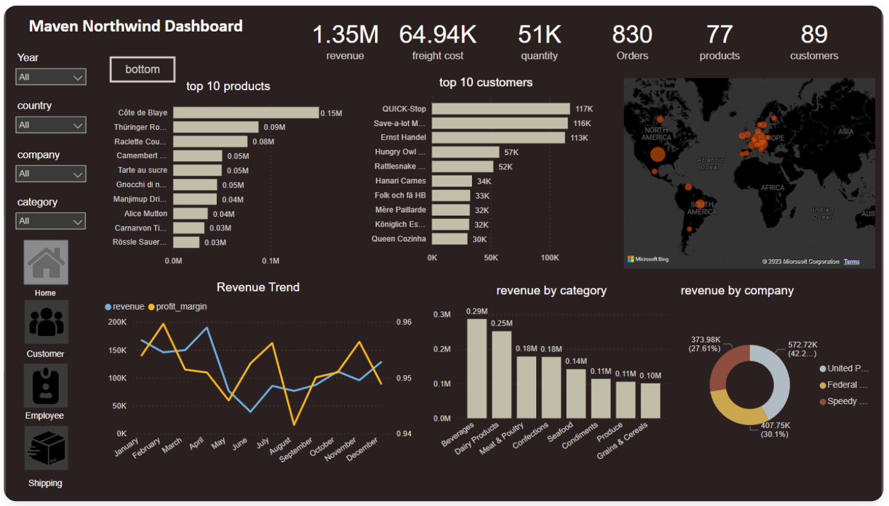
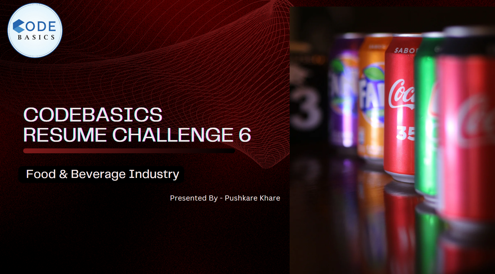
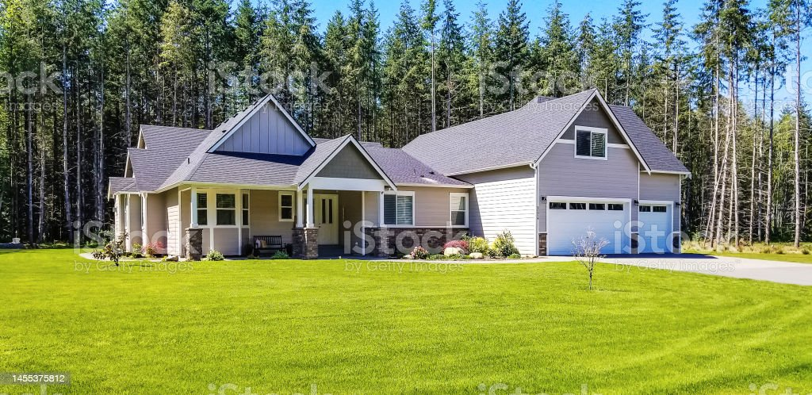
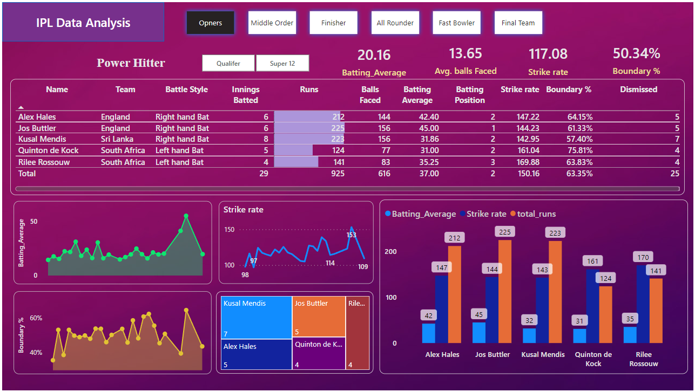

In this project, a comprehensive Power BI report was developed, featuring five distinct dashboards tailored for
executives, marketing, sales, finance, and supply chain departments.
The aim was to provide these departments with quick and actionable insights to support data-driven decision-making across markets.
 

The Northwind Traders Dashboard is a user-friendly PowerBi Dashboard that provides valuable insights into sales metrics. Users can easily explore total sales revenue, analyze sales by region and product category, and understand individual customer sales performance. The dashboard also presents sales trends over time and tracks the performance of salespeople. With this tool, users can make data-driven decisions and optimize their sales strategies effectively

Conducted an end-to-end data analysis for a food and beverage company, aligning insights with business goals. Expertly prepared and visualized data to unveil trends, culminating in actionable recommendations presented to stakeholders. Demonstrated ability to transform raw data into strategic insights for informed decision-making.

Explored Bangalore's vibrant food scene through a Zomato data analysis project. Executed meticulous data cleaning, followed by comprehensive exploratory analysis to unearth nuanced patterns. Leveraged Python libraries including Pandas, Seaborn and Matplotlib to create impactful visualizations, enhancing insights and showcasing skills in data preprocessing and visualization."

This machine learning project utilized Python libraries for exploratory data analysis and feature engineering. Regression techniques were applied to develop a high-accuracy predictive model, which was evaluated using appropriate metrics. The project aimed to extract valuable insights and patterns from the data for accurate predictions

"Executed a Spam Email Classification project with Python's NLP tools. Incorporated 'clean_length' metric, removed stopwords, and employed SVM model for a 98% accuracy. Showcases strong NLP and machine learning skills in effective spam detection.

In this project, I used Python and Beautiful Soup to scrape the IMDb website for data on the top 1000 movies. The data I extracted included the movie title, release year, rating, and runtime,etc.I saved the data in a CSV file.
python festival sales analysis project to get insights of data to get an idea about the spending habits of consumers in festive season

As a market analyst I conducted an in-depth analysis of marketing campaigns for the 'Sustainable Clothing Co.'
In this project, I addressed several key questions to assess the success of the campaigns and provided actionable insights based on the data
This project is an SQL-based analysis of Music Store data.The project includes a database of music albums, artist, playlist and customers.

The Power BI project revolves around the dynamic landscape of the 2022 T20 World Cup, encompassing comprehensive match data spanning both qualifiers and super 12 stages. The project's objective is to meticulously curate an optimal squad of 11 players, striking a harmonious balance, and drawing from the pool of standout performers in the World Cup.

"This Power BI project delves into Altiq's diverse product sales, offering insights into revenue trends, identifying top products and customers based on sales quantity, and dissecting revenue distribution across different markets. Explore a comprehensive analysis of Altiq's sales performance through this illuminating endeavor.

This machine learning project used Python libraries for data exploration, visualization, and model training.Classification algorithm was used to develop a predictive model for mobile price classification, achieving an accuracy score of 93.5%